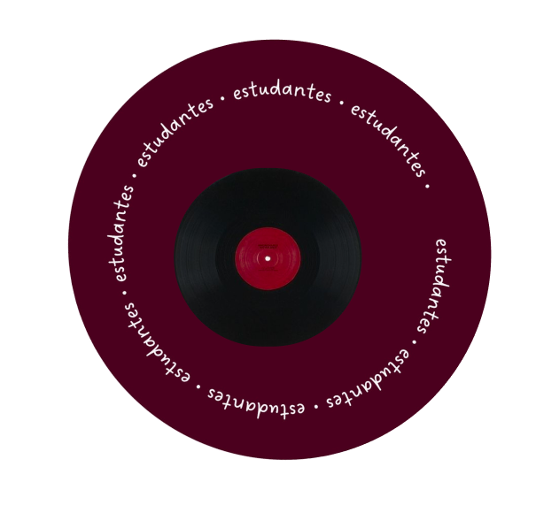
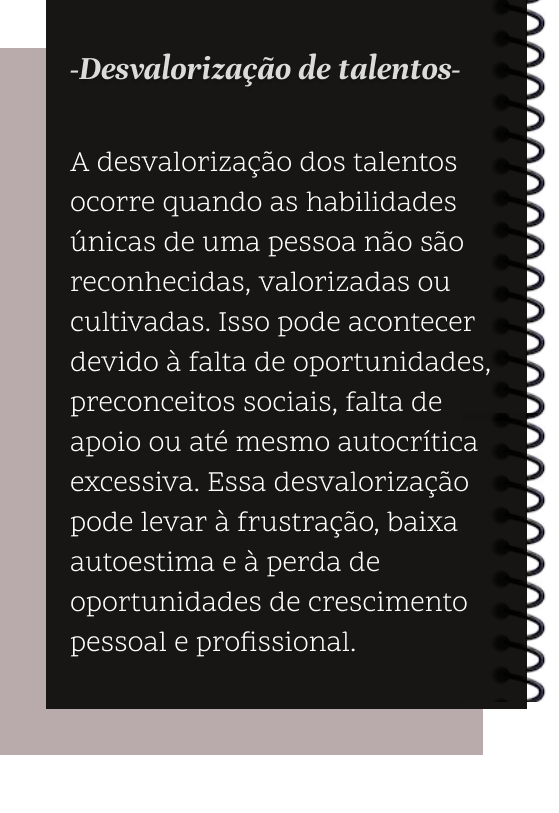

- Qual seu nome? Nome artístico?
- Me chamo Nicolas William Lecheta. Na época sempre utilizei somente Nicolas Lecheta.
- Qual a sua idade?
- Atualmente tenho 24 anos.
- Qual é o seu talento?
- Meu maior talento é minha comunicação, consigo me expressar bem diante de várias situações.
- Qual o principal objetivo do seu talento?
- Principal objetivo é vendas.
- Como descobriu o seu talento?
- Descobri meu talento na prática e através de pessoas.
- Pretende seguir essa carreira ou já segue?
- Já sigo.
- Você já fez algo da sua área para se profissionalizar?
- Ainda não fiz, porém estou correndo atrás disso.
Talentos Uruguai
Talentos são habilidades especiais que as pessoas têm desde jovens e que as destacam em diferentes áreas.
Cultivar esses talentos ajuda as pessoas a se sentirem mais felizes, pois permite que expressem quem realmente são e alcancem sucesso em suas paixões, trazendo bem-estar emocional e realização à vida.
Neste jornal, vamos apresentar talentos que já passaram e outros que ainda encontramos aqui pelo CCM Uruguai.


Questões com os talentos
Talentos nem sempre são reconhecidos, ficando ofuscados por outros. Indivíduos talentosos podem ser ignorados por diversos motivos, como falta de reconhecimento, preconceitos e ambiente competitivo. Isso gera frustração, desmotivação e perda de potencial para o indivíduo e para a sociedade.
É necessário promover a igualdade de oportunidades, o reconhecimento da diversidade e a criação de ambientes que incentivem o desenvolvimento de talentos em todas as suas formas.

Entrevistas
